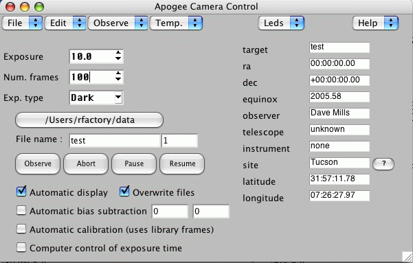
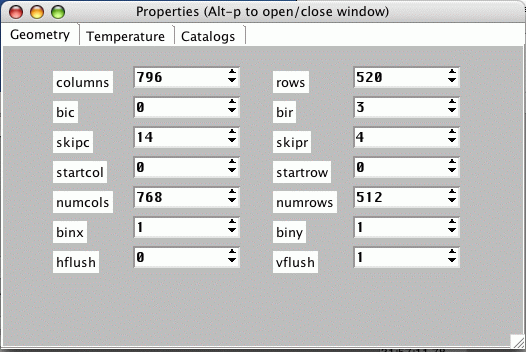
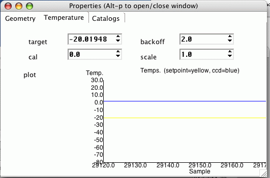
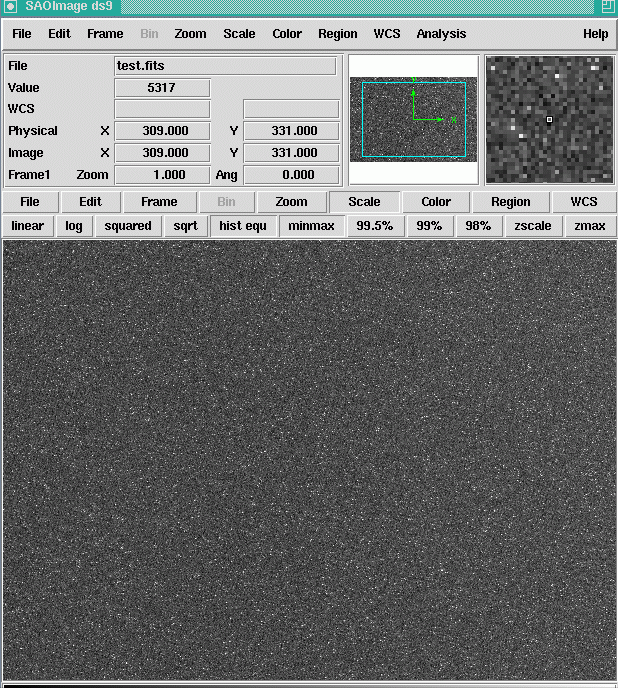

Apogee camera driver – OS X User Guide V1.6
Dave Mills (rfactory@theriver.com) - June 2006
Contents
Introduction
Installation
Graphical User Interface
The Main window
First time setup
Normal usage
Region mode
Focus frame acquisition
Properties window
4. Advanced use
Remote control
External packages
Appendix 1 - Processing CCD images
This distribution contains the drivers and associated packages for Apogee Instruments series of Scientific CCD cameras.
Both ALTA-E (Ethernet interface) and ALTA-U (USB interface) models are supported.
ALTA-E is supported on any OS X release 10.1 or greater.
ALTA-U is supported on any OS X release 10.2.8 or greater.
The following packages are included in this distribution :
apogee-driver-1.6.pkg - The driver and GUI interfaces
celestia-osx-1.3.1-1.dmg - A fully featured star-chart package
external-packages.tar - The sources for component packages (for developers)
Java1.4.1.dmg.bin - Java JRE for use with starjava
Java3D_and_JAI.dmg - Java imaging extension for use with starjava
starjava.jar - Starlink astronomy packages
TclTkAquaBI-8.4.7.0jaguar.dmg - Tcl/Tk for jaguar (10.2.x)
TclTkAquaBI-8.4.7.0panther.dmg - Tcl/Tk for panther (10.3.x)
TclTkAquaBI-8.4.9.1.dmg - Tcl/Tk (latest version for Tiger, untested)
X11UserForMacOSX.dmg.bin - X-windows runtime distribution
The image display component used is the SAOIMAGE DS9 program. This program requires an X-windows environment. Your OS X distribution cd's should contain a version , but we include a copy here for your convenience, just in case you did not select it during your OS installation.
Install the X-windows package first

Choose a convenient location to unpack the archive

Double-click on the X11 metapackage icon


Agree to the license and select a destination volume,
installation should then proceed.

The graphical user interface is built using the Tcl/Tk scripting language. Your OS X distribution includes a limited version but we recommend you install one of the more comprehensive versions included on this cd. Select the appropriate version according to your version of OS X.
Install the TclTkBI package second


Installation requires root priviledges, so enter the admin password for your system.


This package contains the drivers and GUI's.
Install the drivers package third

Agree to the license

Select an installation volume. It is recommended that
you
accept the default location of /opt on the root Volume.
If you
choose another location then you must issue the following
command
in a terminal session after installation completes.
sudo ln -s /where-ever-you-installed /opt


Installation requires root priviledges, so enter the admin password for your system.


Once all the requisite packages have been installed, the following steps are required to configure the drivers :
Start the X-windows program, this should result in one or more "Xterm" windows.
Select an xterm window and type /opt/apogee/runmefirst
Select the correct Apogee camera type from the dialog
For an ALTA-E model , the system will now search for your camera (see ALTA-E section below).
A "startapogee" script will be created in your home directory.
The X-windows icon will most likely appear either on the
Desktop
or in the Applications folder, double-click to start

Depending upon whether you are using the Apple provided X11
release
or the X-Darwin version, you may or may not see the next
screen.

Once X is running you should see at least 1 Xterm window.
In
that window type the /opt/apogee/runmefirst command.
In the dialog
that appears, select the appropriate config file
for your camera
type (alta_net.ini or alta_usb.ini), click "Open".

For ALTA-E models the system will now start searching for
your
camera, so make sure it is powered on , and connected to
your
ethernet switch.

For ALTA-U models you can check that the Mac OS can detect
your
camera using the "System Profiler" tool.

The normal procedure for using the ALTA package is to start the X-windows environment, and then type
./startapogee
into an xterm window. This will start the GUI, and the default image viewer (DS9).

Select "Dark" frames from the menu, and check the
"Overwrite files"
checkbox. Change the exposure time to
10 (seconds).
Now click "Observe".

A small countdown window will appear (it may be hidden by
the
main GUI window)

Once the readout completes, the image is automatically
displayed
in the DS9 viewer. Use the "Scale" button in DS9
and
then select "hist equ" to do a histogram equalization.
Full
documentation for DS9 is available in the /opt/apogee/html
directory,
or online.

This snapshot shows the screen in the middle of a long (100
frames)
calibration run.

The "Edit" menu provide access to the "Properties"
window.
This window provides lower level control/feedback of the
camera.
The "Temperature" panel of the Edit-Properties menu
item
lets you control the setpoint, and see the Temperature
history graph.

The "Geometry" panel of the Edit-Properties menu
item
lets you control the frame size and binning properties.
It
is usually more convenient to use the Observe menu
to
interactively select ROI's.

Advanced users may wish to explore the capabilities of
the
StarJava image processing and data reduction toolset which
may
be installed from the cd (double-click the starjava.jar icon
on
the installation cd).
The User Guide and Programming manual provide more
detailed
explanations of all the aspects of the user interface,
and the
embedded scripting commands available (some tcl/tk
expertise
is advisable).
The ALTA-E series cameras operate over standard ethernet
and
may require you to temporarily alter the IP address of
your PC
during configuration (if you have no DHCP server).
Log in with the username you will use to operate the camera, and type
/opt/apogee/scripts/altaDiscover
A small window will appear logging progress of the search.
The camera obtains its IP address from a DHCP server on your local
network.
This means that every time the camera is powered on
it
may obtain a different IP address. In this case you will have
to run
/opt/apogee/scripts/altaDiscover
again each time.
To avoid this you can configure the camera to have a static IP address.
Run altaDiscover once to obtain the current address. Then start a webrowser and navigate to
http://address-reported-by-altaDiscover
The cameras onboard webserver shows a welcome page.
Choose the
"Configure Network properties" option.
Use a username of
"admin" and password of "configure"
to access
the page.
Disable the DHCP option, and then enter the cameras
IP address
in the appropriate box.
Use the same network mask and gateway
settings that
were reported on the welcome page.
Then click
"Commit" to save the settings.
Once you have setup the camera with a static IP address,
it is
also a good idea to enter this address into the
hosts database on
your machine.
For example, if the IP address is 192.168.0.100, then add the following line to /etc/hosts (as root)
192.168.0.100 alta alta.localdomain
3. Graphical user interface.
The graphical user interface is still under development. It provides easy acces to the major functions such as image acquisition, temperature control, and calibration image management.
The program may be started from an xterm by typing
~/startapogee
The program will open a small main window, and then create a message window which shows the progress of the system startup operations. On a slow machine this make take a minute, n a modern machine (eg 1Ghz cpu), the startup only takes a couple of seconds and the messages will probably update too quickly to be read.
Once the message window closes, the system is ready for use. The camera is initialized, and temperature control has been switched on.
3.1 The main window

3.1.1 First time setup
The GUI is initially configured for Tucson,AZ. To set the location, click the "?" button next to the location. A window will open, showing a list of locations, use the mouse to scroll the list until you reach your city, then double-click it. The latitude/longitude and name will be inserted into the main window.
If your city is not listed, simply delete "Tucson" and type the name in. There are a number of WWW sites can be used to lookup your longitude/latitude based on City or zip code.
Select "File->Save" from the pull-down menu to save the changes to disk.
3.1.2 Normal usage
1. Select the image type (Object, Flat-field, Dark, etc)
2. Adjust the exposure time as required
3. Adjust the number of frames
4. Optionally adjust the directory to be used to save images (defaults to the startup directory)
5. Adjust the image name. For sequences of images, the image number
can be automatically inserted into the name at any position using a
marker (%d). For example test_%d
6. Click "Observe" (a sequence of frames may be terminated by clicking "Abort" after the sequence has started).
The exposure(s) will now be taken and saved on disk in FITS format. If the "automatic display" option is selected, then the image(s) will also be automatically be displayed in the DS9 image viewer.
By default the raw image data is written to disk. The "auto-calibrate" option is used to select automatic calibrations. When this option is enabled, the best (ie nearest temperature match) calibration frames will automatically be loaded and applied. Please refer to the "Calibrations" chapter to learn how to create libraries of calibration data for this purpose.
An option to perform automatic bias subtraction is also provided. Use the geometry properties to adjust the frame dimension (BIC, SkipC, and NumY) to provide a reasonable number of bias columns (6+),

then enter the column numbers in the entry fields provided. Selecting "Automatic bias subtraction" will then automatically average the data in the bias columns and them from the image before writing it out. In this case the bias columns will not be included in the written image.
For the most flexible post-processing, the images are written including IRAF compatible header information. This allows the images to be easily processed using the IRAF ccdred package (available as part of the "Open Source Astronomy" cdrom distribution available from http://www.randomfactory.com/).
In addition to the main window, there are a number of auxillary windows to control less frequently used facilities. These windows can be accessed via the pull-down menu's, or via hot-keys.
Alt-p - will open/close the "Properties" window
Alt-c - will open/close the "Calibrations" window
Alt-d - will open/close the "Drift-scan" window
3.1.3 Region mode
To select a sub-region for readout
1. Ensure a full-frame image is displayed in DS9
2. Select "Observe->Region" from the pull-down menu
3. Reply to the pop-up dialog (use current region or define a new one)
4. For new regions, use the mouse to define the region in DS9 using a click-and- drag motion
5. Click the pop-up OK when ready
6. Click "Observe"
Region mode may also be accessed via the "Observe->Continuous" pull-down menu entry. In this mode, the sub-region will be continuously exposed, readout, and displayed, until "Abort" is used to stop the sequence. This mode of operation should be useful for manual focusing. The subregions are not saved to disk when in continuous exposure mode.
3.1.4 Focus frame acquisition
Focus frames consist of multiple exposures, taken without reading out the image. Between each exposure, the image is shifted slightly on the detector (either by reading out a few lines, or by offsetting the telescope slightly), and the focus is also adjusted.
We use the detector shift method, as it also works on manual telescopes.
After each exposure, a pop-up dialog will appear. At this point, manually adjust the focus by a (hopefully) small known amount, then click OK. After all the exposures are completed, the frame is read out and written to disk. Special keywords are inserted into the header to allow the IRAF imfocus task to automatically determine "best" focus (this feature is still under development).
Support for electronic focus position adjustment will be made available in future releases of the package.
For systems where no electronic read-back of focus position is available it can be simulated by attaching a calibrated disk to the focuser.
3.2 Properties window
The properties window can be accessed either by selecting "Options->Properties" from the pull-down menu, or by typing Alt-p whilst the pointer is in the main window. In each case repeating the operation will close the window again.
The window consists of a set of tabbed panels, click the tab name to view the panel.
Geometry
This panel provides easy editing of all the relevant parameters to competely define the readout region. Subregions can be defined by editing StartX, StartY, NumX and NumY. Binning can be set in each axis, and so on. Every change is immediately tested, and any illegal combinations will cause the background color of the panel to change. It will not be possible to obtain an image if an illegal combination is selected.
In general the only parameters which will be manually adjusted are the binning factors. Sub-region definition is more easily performed using the pull-down "Observe->Region" menu selection in the main window.
Temperature

This panel provides control and feedback. Select the required target temperature using the arrows, or type in a new target temperature.
The graph illustrates the last minute or so of temperature readings from the camera. It often takes about 20 seconds after a new target temperature is requested before the temperature changes significantly, so be patient.
DS9 Image display tool
Images may be automatically displayed in the DS9 image viewer. Select "automatic display" in the main window to activate this option.

The DS9 image viewer is a powerful tool. There is extensive online documentation available at
file:/opt/apogee/html/ds9/index.html
Most aspects are fairly intuitive, configuration is done using the pull-down menus; contrast/brightness is adjusted by holding down the left-mouse-button, and moving the mouse around. The middle mouse button centers the image at the current location.
Advanced use.
4.1 Remote control
There are three methods for using the software via a remote computer.
Standard X-windows
Use the standard X-windows display redirection facility to point
the display to another computer (named "other" for example).
eg. setenv DISPLAY other:0
The "xhost +ccd-name" command must also be issued on the "other"
computer, to allow remote displays to take place (where ccd-name is the
name of the camera control computer).
Finally , start the GUI as usual, the windows should appear on the
"other" machine.
This method only works if both computer are running a *nix type operating
system. X-windows is available for MS Windows, but it is usually expensive.
2. VNC
Use the VNC (Virtual network computing) software (which is free, and open-source).
This package supports the remote viewing on the ccd GUI desktop on *nix, windows, and Mac platforms. Even better, multiple remote users can simultaneously view the same dekstop, and even share interaction rights with the applications. Given fast network connections (fast ethernet) this is a near optimal solution. The VNC package is just one of the items in the bundle of extras included in the cdrom version of the Apogee Drivers cd, available from The Random Factory.
Future releases of the driver will also include support for true client/server use of cameras. In this situation, the GUI will actually run on the remote machine, and only the low level camera access code will run on the camera controller computer.
Client/Server
An experimental client/server mode of operation is also available.
The script /opt/apogee/scripts/startserver will lauch a camera server process which listens on port 2001 for connections. Commands can be sent from any other computer by copying the script /opt/apogee/scripts/apogeeclient to the remote machine and editing it to reflect the location of the machine hosting the camera. The client machine must have tcl installed (in /usr/bin/tclsh).
The socket interface is very simple and could easily be driven by user programs written in any standard programming language.
5. External packages
The Random Factory also produces a very extensive collection of Astronomical software all pre-compiled for Mac OS X. The current release includes over 4GB of software on a 4-cdrom set.
Appendix 1 - Processing CCD images
This advice is paraphrased from the advice provided to professional Astronomers observing at the US National Observatory. It is based on a document included with the IRAF system, and was written by Dr. Phil Massey (currently at Lowell Observatory).
What Calibration Frames Do You Need?
The answer to this depends to some extent on what it is that you are doing. The goal is to not let the quality of the calibration data degrade your signal-to-noise in any way. If you are in the regime where the read-noise of the chip is the dominant source of noise on your program objects, then subtracting a single "bias frame" from your data would increase the noise prohibitively.
However, if you instead use the average of 25 bias frames, the noise will be increased by
only 10%. Of course, if you are into high signal-to-noise spectroscopy, so you have lots and lots of signal compared to read-noise, or if you have high sky background on direct images, so that read-noise is again immaterial, then the signal-to-noise will be little affected by whether you have only a few bias frames. However, in this regime the quality of your flat fielding is all important if you want to get the most out of your data.
The following list contains the type of calibration images you may need, and provides some guide to the consideration of how many you may want to have.
bias frames.
These are zero second integration exposures obtained with the same pre-flash (if any) you are using on your objects. If read-noise will sometimes dominate your source of error on the objects, take 25 bias frames per night. Take them over dinner and you'll never notice it. You will want to have a new sequence of these each day.
dark frames.
These are long exposures taken with the shutter closed. If your longest exposure time is over 15 minutes you may want to take an equal length dark frame, subtract a bias frame from it, and decide if you are worried about how much dark current is left. Applications where dark current will matter are long-slit spectroscopy and surface brightness studies -- cases where the background is not removed locally. If you do find that you need to take care of dark current, then you should take at least 3 and preferably 5 to 10 dark frames during your run, each with an integration time equal to your longest exposure. You should ensure that your system is sufficiently light-tight to permit these to be done during the day.
flat field exposures.
At a minimum, flat field exposures are used to remove pixel-to-pixel variations across the chip. Usually dome flats (exposures of an illuminated white board) will suffice to remove the pixel-to-pixel stuff. You will want to expose the dome or projector flats so that you get sufficient counts to not degrade the signal-to-noise of the final images. If you are after 1% photometry per pixel then you will need to have several times more than 10,000 electrons accumulated in your flats, but you need to be careful not to exceed the good linearity limit in any single flat exposure. Generally if you have 5 or more flats each with 10,000 electrons per pixel you are probably fine. You will need a set like this for every filter, and you probably will want to do a new sequence every day.
twilight flats.
If you are interested in good photometry of objects across your field, you need to know if the sky looks different to your CCD than the dome flat. It is not unusual to find 5-10%
gradients in the illumination response between a flat and a sky exposure, and this difference will translate directly into a 5-10% error in your photometry. For most applications, exposures of bright twilight sky (either for direct imaging or spectroscopy) will cure this problem. With direct imaging this requires you to be very quick on your feet to obtain a good level of sky exposure in each of your filters while the sky is getting darker and darker. (Only the truly desperate would take twilight flats in the morning!) For direct imaging I would recommend 3 to 5 exposures in each filter, stepping the telescope slightly in between the exposures so that any faint stars can be effectively cleaned out. You will find that you need to keep increasing the exposure time to maintain an illumination level of 10,000 electrons.
blank dark sky exposures.
Some observers doing sky-limited direct imaging may wish to try exposures of blank sky fields rather than twilight sky, as the color of twilight and the color the dark sky do differ considerably. Obtain at least three, and preferably four, long exposures through each filter of some region relatively free from stars , stepping the telescope 10-15 arcseconds between each exposure. The trick here, of course, is to get enough counts in the sky exposures to make this worth your while. Unless you are willing to devote a great deal of telescope time to this, you will have to smooth these blank dark sky exposures to reduce noise, but the assumption in such a smoothing process is that the color response of the chip does not vary over the area you are smoothing. You might try dividing a U dome flat by a V dome flat and seeing how reasonable an assumption this might be. Also, if the cosmetics are very bad the smoothing process will wreak havoc with your data if you are not successful in cleaning out bad columns and pixels.
This section will briefly outline what we will do with the calibration images.
Most of the calibration data is intended to remove "additive" effects: the electronic pedestal level (measured from the overscan region on each of your frames), the pre-flash level (measured from your bias frames), and, if necessary, the dark current. The flat field
data (dome and twilight sky exposures) will remove the multiplicative gain and illumination variations across the chip.
When you obtained your frames at the telescope, the output signal was "biased" by adding a pedestal level of several hundred ADU's. We need to determine this bias level for each frame individually, as it is not stabilized, and will vary slightly (ss 5-30 ADU's) with telescope position, temperature, and who knows what else. Furthermore, the bias level is usually a slight function of position on the chip, varying primarily along columns. We can remove this bias level to first-order by using the data in the overscan region, the (typically) 32 columns at the right edge of your frames.
data
We will average the data over all the columns in the overscan region, and fit these values as a function of line-number (i.e., average in the "x" direction within the overscan region, and fit these as a function of "y"). This fit will be subtracted from each column in your frame; this "fit" may be a simple constant. At this point we will chop off the overscan region, and keep only the part of the image containing useful data. This latter step usually trims off not only the overscan region but the first and last few rows and columns of your data.
If you pre-flashed the chip with light before each exposure, there will still be a non-zero amount of counts that have been superimposed on each image. This extra signal is also an additive amount, and needs to be subtracted from your data. In addition, there may be column-to-column variation in the structure of the bias level, and this would not have been removed by the above procedure. To remove both the pre-flash (if any) and the residual variation in the bias level (if any) we will make use of frames that you have obtained with a zero integration time. These are referred to in IRAF as "zero frames" may also be called "bias frames". We need to average many of these (taken with pre-flash if you were using pre-flash on your object frames), process the average as described above, and subtract this frame from all the other frames.
"Dark current" is also additive. On some CCD's there is a non-negligible amount of background added during long exposures. If necessary, you can remove the dark current to first-order by taking " dark" exposures (long integrations with the shutter closed), process- ing these frames as above, and then scaling to the exposure time of your program frames. However, it's been my experience that the dark current seldom scales linearly, so you need to be careful. Furthermore, you will need at least 3 dark frames in order to remove radiation events ("cosmic rays"), and unless you have a vast number of dark exposures to average you may decrease your signal-to-noise;
The bottom line of all this is that unless you really need to remove the dark current, don't bother.
The next step in removing the instrumental signature is to flat-field your data. This will remove the pixel-to-pixel gain variations, and (in the case direct imaging) the larger-scale spatial variations. If you are doing direct imaging, then you are probably happy by normalizing the flat-field exposures to some average value.
The final step in the flat-fielding process is to see if your twilight sky exposures have been well flattened by this procedure--if not, we may have to correct for this.
Apogee camera driver - Programmers Guide V1.6
Dave Mills(rfactory@theriver.com) - June 2006
Contents
CapnCamera object (USB/NET)
Tcl Scripting interface
Code generation
Tcl/Tk and loadable libraries
Ccd library
LX library
Remote control
1. CApnCamera object (USB/NET)
In the unlikely event that you should find it necessary to use the C++ interface directly, there is a small sample of code in the file
/opt/apogee/src/apogee/test_alta.cpp.
This code should be easily comprehensible to anyone familiar with C++. For example to create a new camera object
cam = new CApnCamera;
To call a method, for example InitDriver
result = cam->InitDriver(cameraNumber,0,0); - USB, NET
To set the value of an instance variable
cam->m_CoolerSetPoint = -20.0;
2. Tcl Scripting interface
The simplest way to program using the driver is via the provided scripting interface libraries. An interface is provided for the Tcl/Tk language. This language is easy to learn due to its interpretive nature. That is, you type commands directly to a command line, and they are executed immediately.
Interfaces to other languages (python, perl, and more) can also be automatically generated using the SWIG package (included in the "external-packages.tar" archive).
To begin a Tcl/Tk session, open an X-terminal, start a csh shell and prepare the environment by typing
source /opt/apogee/scripts/setup.env (prepares the environment)
This will initialize your shell to use the included version of "wish" , the Tcl/Tk windowing shell. Another version of "wish" may already be installed on the system, but it is recommended that the included version be used to avoid and potential library version conflicts.
/usr/bin/wish (starts the tcl/tk shell)
A small gray window will open. Re-select your xterm window and type
source /opt/apogee/scripts/camera_init.tcl (command line only)
or
source /opt/apogee/scripts/gui.tcl (gui interface plus command line)
The appropriate driver library will be dynamically loaded, and new commands will be added to the Tcl shell. Type a "?" at the prompt to get a list of all the commands Tcl is currently aware of.
The camera_init script also creates a CAMERA variable which acts as a software pointer
to the C++ structure used to control the camera.
Tcl commands typically protect the user against incorrect usage. For example the CAMERA object may be commanded using the syntax
$CAMERA command [arg1] [arg2] ...
Typing
$CAMERA xyzzy
will result in an error report (because "xyzzy" is not a valid camera command!). This error report helpfully includes a list of all the commands that the $CAMERA referenced object does understand.
The most useful commands are listed below.
$CAMERA InitDriver cameraNumber 0 0
This command needs no additional arguments, it performs camera initialization. It will not normally be necessary to use this call, as it will have been done as part of the camera_init.tcl script.
$CAMERA read_Status
This command returns an integer representing the readout status of the camera. Typically this will be stored in a tcl variable, and then printed out in user friendly format. E.g.
(this example is for ISA/PCI/PPort cameras, the ALTA status codes are slightly different)
set s [$CAMERA read_Status]
switch $s {
0 {set t "Idle"}
1 {set t "waiting for trigger"}
2 {set t "exposing"}
3 {set t "downloading"}
4 {set t "line ready"}
5 {set t "image ready"}
6 {set t "flushing BIR"}
default {set t "ERROR code $s"}
}
puts stdout "Camera status is $s"
$CAMERA Expose duration shutter
Take an exposure of the requested duration (expressed in seconds). The value of the shutter argument is either 0 - leave shutter closed, or 1 - open shutter during exposure.
$CAMERA BufferImage testname
This command retrieves the image from the camera, and saves it in the PC's memory/swap-space. Any number of images can be buffered in this way, subject to available memory.
Once the image is in memory it can be manipulated using the commands from the Ccd library. For example
list_buffers
shows current buffers, their dimensions, bit-depths etc.
write_buffer testname mytest.fits
stores the contents of the buffer "testname" on disk as a FITS format file.
In addition to the "methods" associated with a CAMERA object, there is also a mechanism for access to the "instance" variables of the CAMERA object. Each instance variable corresponds to a camera configuration parameter. The syntax for examining the current value of a parameter is
$CAMERA configure -m_[parameter-name]
and to set the parameter to a new value
$CAMERA configure -m_[parameter-name] new-value
The following instance variables are supported
CameraId - Camera number
CameraInterface - 0=NET, 1=USB
CameraModel - Model code
ClampColumns - Clamp columns
Color - 1 if color ccd
DataBits - 0=16 bits, 1=12 bits
DefaultGainTwelveBit – gain 0 to 1024
DefaultOffsetTwelveBit - offset
DefaultRVoltage - Voltage
DigitizeOverscan - 1 = digitize overscan region
HFlushDisable - 1 = Disable horizontal flushing
ImagingColumns - Number of imaging columns
ImagingRows - Number of imaging rows
InterlineCCD - 1 = interline ccd
MinSuggestedExpTime – minimum recommended exposure
OverscanColumns - Number of overscan columns
OverscanRows - Number of overscan rows
PixelSizeX - Pixel x size in microns
PixelSizeY - Pixel y size in microns
PostRoiSkipColumns – Post ROI skip
PreRoiSkipColumns – Pre ROI skip
ReportedGainSixteenBit -
ResetVerticalArrays – 1 = Reset vertical arrays
RoiBinningH - Horizontal binning
RoiBinningV - Vertical binning
RoiPixelsH - Exposure column count
RoiPixelsV - Exposure row count
RoiStartX - First exposure column
RoiStartY - First exposure row
ShutterCloseDelay - shutter close delay
SupportsSerialA - 1 = serial port A suppor
SupportsSerialB - 1 = serial port B support
TempRampRateOne -
TempRampRateTwo -
TotalColumns - Total columns on sensor
TotalRows - Total rows on sensor
UnderscanRows - Number of underscan rows
VFlushBinning - 1 = Vertical flush binning
For example, the following commands would prepare the readout region
$CAMERA configure -m_RoiStartX 100
$CAMERA configure -m_RoiStartY 100
$CAMERA configure -m_RoiPixelsH 64
$CAMERA configure -m_RoiPixelsV 64
would specify a 64x64 pixel region starting at column 100, and row 100.
The camera_init.tcl script includes code to interrogate the C++ level API and construct a generic interface to all the available methods and instance variables which can read/write camera parameters. The names of parameters which may be read can be found as members of the global array CCAPIR, and those which can be written can be found as members of the global array CCAPIW.
The element of arrays can be examined using the syntax, e.g. for CCAPIW
array names CCAPIW
3. Code generation
The scripting interfaces are created using a mixture of custom code (the Ccd library), and an automatically generated interface. The automatically generated portion is created using SWIG (Simple Wrapper and Interface Generator).
Note that older versions of SWIG may not be capable of generating functioning wrapper code for C++/Tcl. Please use the included version (1.3a5 or later).
SWIG is very easy to use. All that is required is a .i file which defines the methods and instance variables for the object. In many cases this file can be copied directly from the .h header file for the object.
Once the .i file has been prepared, the wrapper code can be generated using a command such as
/opt/apogee/bin/swig -tcl8 -c++ apogeeNET.i
Note that there is a slightly different file for each interface type. This allows us to generate shared libraries which are named according to the interface type.
ALTA models (USB/NET)
To add a new method to the CApnCamera object, the following steps are required
- create C++ code for the method in ApnCamera_Custom.cpp
- add definitions to ApnCamera.h
- add the same definitions to ApnCamera.i
Once the revised ApnCamera_Custom.cpp and ApnCamera.h and ApnCamera.i code has been generated, then you are ready to build the shared library using a command such as
make apogee_USB.dylib
The Camera interface is now ready to load into a wish shell using
wish
load /opt/apogee/lib/libccd.dylib
load ./apogee_USB.dylib
Once your new commands are working properly you can install the library with
make install
SWIG is also capable of generating code for other scripting languages (for example, python). Refer to the SWIG manual for details.
Tcl/tk and dynamic libraries
The most recent versions of Tcl/Tk have extensive support for dynamically loading libraries of code. The Apogee ALTA GUI makes extensive use of this capability to tune the behavior of the interface depending upon the facilities available.
Dynamically loadable libraries are provided for the following
- Apogee USB port interface cameras
- Apogee Ethernet interface cameras
- Ccd frame in-memory buffering/processing
- FitsTcl FITS file access
- LX200 serial interface
- Compressed GSC catalog access
- Digital sky survey access
- BLT graphics library
In all cases libraries are loaded into a running wish by typing a command
(or including the command in a source'd script) such as
load [path-to-library]lib[name].dylib
To create a new loadable library, the following files will normally be required (assuming a package name of "newpack")
newpackPackage.c - stub code to define the namespace, test, and call initialization code
newpackVersion.c - stub code to specify version info
newpack.c - the implementation
The implementation will typically consist of a routine named "newpackAppInit" which defines the available commands, plus code for the commands themselves.
The interface from Tcl to C is easy to use. The code in /opt/apogee/src/ccd can serve as a template for the most common functionality.
5. CCD library
The Ccd library can be interactively loaded into a wish shell using the command
load /opt/apogee/lib/libccd.dylib
The Ccd loadable library is a Tcl extension which provides simple commands for manipulating the raw data generated by the readout of a CCD camera.
The following commands are available
read_image - load a FITS file into an in-memory buffer
write_image - write raw image data to a FITS file
write_cimage - write bias subtracted image data to a FITS file
write_dimage - calculate "dark" frame and write to FITS file
write_zimage - calculate "zero" frame and write to FITS file
write_fimage - calculate "flat" image and write to FITS file
write_simage - calculate "sky-flat" image and write to FITS file
shmem_image - copy image data to a shared memory segment
show_image - transfer image data to DS9 via shared memory
store_calib - calibrate the current in-memory frame
write_calibrated - calibrate and save to disk
list_buffers - print a list of in-memory buffered images
set_biascols - specify the bias columns
set_biasrows - specify the bias rows
The Ccd library commands interact with Apogee drivers in the following manner
- a driver library "BufferImage" call will store an image in a named memory buffer
- Ccd library calls then reference the image by that name
For example
$CAMERA Expose 10 1
exec sleep 10
$CAMERA BufferImage testimage
write_image testimage myfile.fits
would take a 10 second exposure (with the shutter open), wait for 10 seconds, read-out the image, and store it in a buffer named "testimage", and finally write the raw image data to a disk FITS file named "myfile.fits" The syntax required for each call can be determined interactively by simply calling the function without any arguments. The required syntax will then be printed out.
Future versions of this library will include image arithmetic and conversion functions.
6. LX library
The LX library can be interactively loaded into a wish shell using the command
load /opt/apogee/lib/liblx200.dylib
The LX200 loadable library is a Tcl extension which provides simple commands for interacting with a telescope which support the protocol used by LX200 series telescopes.
The following commands are available
open_scope - open a link (serial) to the telescope
close_scope - close the link to the telescope
lx200_mode - query the telescope mode
lx200_clockfmt - query the clock format in effect
lx200_goto - slew to target
lx200_object - define target from catalog
lx200_ext - define target from extended catalog
write_scope - send low level command to scope
lx200_set_date - set the date
lx200_set_filter - set filter
lx200_set_site - set site details
lx200_set - generic parameter set
lx200_pos - set position (ra,dec)
read_scope - low level read from scope
lx200_obj_sync - sync on current position
The syntax required for each call can be determined interactively by simply calling the function without any arguments. The required syntax will then be printed out.
Future versions of this library will include support for automated observation scripting with multiple objects, filters, etc.
7. Remote use
The software bundle includes a simple solution for remote control of camera and telescope functions. Every function in each loadable libary can also be enabled for remote access by using the provided /opt/apogee/scripts/startserver script.
In this case the local interface will not display any of the elements of the graphical interface, but will open a socket (port 2001) and accept future commands via that channel.
A very simple sample client is provided in /opt/apogee/scripts/apogeeclient. This client
only supports a limited set of commands. In order to add new functionality you can add the required functions to /opt/apogee/scripts/apogeeserver.tcl in the “doService”
routine.
This remote control capability can be used from any platform which supports tcl8.0 or
later (windows,mac,unix,solaris etc.).
Quick start client setup
load tcl8.0 or later in client computer
make sure /usr/bin/tclsh exists
copy /opt/apogee/scripts/apogeeclient to client computer
edit apogeeclient to replace “localhost” with server machine name
run apogeeclient to see list of supported commands.